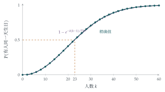

STEP II 2007，第 13 题
继续之前，请先阅读题目（原题为英文）。题目载于 STEP Support Programme 的题目资料库： step.maths.org/questions/07-s2-q13
引子
一个房间里要有多少人，才会令其中两人同一天生日的机会大于一半？大多数人会猜 \(180\) 左右，即 \(365\) 的一半。答案却是 \(23\)。在一班三十人的课堂里，有人同一天生日的概率（probability）是 \(70\%\)；在五十人的派对上，则是 \(97\%\)。
这个结果令人意外，是因为我们把两个不同的问题混为一谈：“有没有人与我同一天生日？”（这确实需要大约 \(253\) 人）和“有没有任何两个人同一天生日？”。\(23\) 个人可以组成 \(\binom{23}{2} = 253\) 对，而每一对都是一次出现相同生日的机会。这道题把这个直觉变得精确，而同样的数学亦决定了保护你银行户口的密码技术有多安全。
动笔之前
为甚么计算没有两位宾客同一天生日的概率会比较容易？请宾客排成一行：第二位避开第一位生日的机会是多少？第三位同时避开前两位的机会又是多少？
“至少有两人相同”包含许多互相重叠的情况（两人相同、三人相同、两对不同的人各自相同……）。它的补事件（complement）“全部不同”却是单一而简洁的事件。第二位宾客避开第一位生日的概率是 \(\frac{364}{365}\)；在此条件下，第三位同时避开前两位的概率是 \(\frac{363}{365}\)；如此类推。
逐步解题
阶段 1 一个有用的近似
\(y = e^{-x}\) 在 \(x = 0\) 处的切线（tangent line）是甚么？
由于 \(e^{-x} = 1 - x + \frac{x^2}{2} - \cdots\)，当 \(x\) 很小时，我们有 \(e^{-x} \approx 1 - x\)。取 \(x = r/n\)，得 \[\frac{n - r}{n} = 1 - \frac{r}{n} \approx e^{-r/n}. \qed\] 误差约为 \(\frac{r^2}{2n^2}\)，当 \(r\) 远小于 \(n\) 时，这个误差很小。
阶段 2 有人同一天生日的概率
\(k\) 个生日全部不同的概率是 \[\frac{365}{365}\cdot\frac{364}{365}\cdot\frac{363}{365}\cdots\frac{365 - (k - 1)}{365} = \prod_{r=0}^{k-1}\frac{365 - r}{365}.\] 对每个因子使用上述近似（approximation），再利用指数函数相乘时指数相加这个性质， \[\prod_{r=0}^{k-1}e^{-r/365} = \exp\Bigl(-\frac{0 + 1 + \cdots + (k - 1)}{365}\Bigr) = \exp\Bigl(-\frac{k(k - 1)}{730}\Bigr).\] 因此，至少有一对人同一天生日的概率约为 \(1 - e^{-k(k-1)/730}\)。■
看看指数：\(\frac{k(k-1)}{730} = \binom{k}{2}\Big/365\)。用文字表达，这说明了甚么？
它是宾客的配对数目，乘以某一对人同一天生日的概率 \(\frac{1}{365}\)：也就是生日相同的配对数目的期望值（expected number）。这个近似告诉我们，没有任何配对相同的机会是 \(e^{-(\text{相同配对的期望数目})}\)，这又一次透露出泊松分布（Poisson distribution）的影子，正如 第 9.8 节 所见。
阶段 3 二十三
我们需要 \(1 - e^{-k(k-1)/730} \geq \frac12\)，即 \(e^{-k(k-1)/730} \leq \frac12\)，亦即 \[\frac{k(k - 1)}{730} \geq \ln 2 \approx \frac{253}{365}, \qquad\text{即}\qquad k(k - 1) \geq 506.\] 由于 \(22 \times 21 = 462\) 而 \(23 \times 22 = 506\)，最小的值是 \(k = 23\)。■
（\(23\) 位宾客时的精确概率是 \(0.507\)，\(22\) 位宾客时是 \(0.476\)，所以这个近似给出了正确答案。）
阶段 4 与主人同一天生日
对每位宾客来说，不与主人同一天生日的概率是多少？在这方面，各位宾客之间是否互相独立（independent）？
每位宾客各自独立地以概率 \(\frac{364}{365} \approx e^{-1/365}\) 避开主人的生日。因此 \(k\) 位宾客中无人与主人同一天生日的概率是 \(\bigl(\frac{364}{365}\bigr)^k \approx e^{-k/365}\)，而我们需要 \[e^{-k/365} \leq \tfrac12, \qquad\text{即}\qquad k \geq 365\ln 2 \approx 253.\] 所以必须有 \(253\) 位宾客。■
这个对比正是重点所在：要与某一个指定的人生日相同，需要 \(253\) 位宾客；但要有某一对人生日相同，只需 \(23\) 人，因为 \(23\) 个人可以组成 \(253\) 对。

回顾
利用补事件。“全部不同”只是一个乘积；“至少有一对相同”却是一团乱麻。
先线性化，再取指数。把每个因子 \(1 - x\) 换成 \(e^{-x}\)，乘积就变成了和。
数配对。指数正是配对的数目乘以一对人相同的机会。\(k(k-1)\) 中的平方，就是这个悖论的全部解释。
背后的数学
平方根定律
若把 \(365\) 天换成 \(n\) 个等可能的日子，同样的论证给出 \[\mathrm{P}(\text{有人相同，人数为 } k) \approx 1 - e^{-k^2/(2n)},\] 所以只要 \(k\) 达到 \(\sqrt{n}\) 左右，而不是 \(n\)，就很可能出现相同的情况。更准确地说，概率在 \(k \approx 1.18\sqrt{n}\) 时达到 \(\frac12\)，而在首次出现重复之前你需要遇到的人数，期望值约为 \(\sqrt{\pi n/2}\)（当 \(n = 365\) 时，约为 \(24.6\)）。这条平方根定律（square-root law）正是巧合如此常见的原因：在任何一大批事件之中，总很可能有某一对在某方面吻合，尽管任何一个指定的吻合都不大可能发生。
生日攻击
电脑会计算文件的杂凑值（hash），以检查文件有否被窜改：那是一个指纹，可能的取值有（比方说）\(n = 2^{128}\) 个。伪造者若想得到两份杂凑值相同的文件（一份无害的合约和一份欺诈的合约），并不需要试 \(2^{128}\) 份文件。根据生日问题的论证，为每份文件各自产生大约 \(\sqrt{2^{128}} = 2^{64}\) 个变体，就很可能得到一对相同的杂凑值。这种生日攻击（birthday attack）正是现代杂凑函数采用 \(256\) 位元或以上的原因：有一半的位元因平方根定律而白白损失。类似的计算亦决定了随机识别码必须有多长，才能令两部电脑永远不会碰巧选中同一个。
生日问题通常归功于冯·米塞斯（Richard von Mises），他在 1939 年讨论过这个问题，不过它在此之前已经流传。据说 Harold Davenport 亦更早知道这个问题，只是觉得它太简单而没有发表。按 Warren Weaver 的说法，他在第二次世界大战期间喜欢在军官的晚宴上示范这个问题：他打赌在场二十二人之中有两人同一天生日，结果输了，直至一位女侍应透露她与其中一位军官同一天生日。
思维技巧
当“至少一个”很复杂时，就去求“一个也没有”的概率。当乘积难以处理时，把每个因子近似为指数函数，然后把指数相加。
这两个做法在大学里都是标准手法。第二个，即 \(1 - x \approx e^{-x}\)，是泊松近似理论的起点，也是渐近方法（asymptotic methods）的起点；后者用来估计那些复杂得无法精确计算的量。
延伸练习
首次重复。试做 STEP II 2014，第 13 题。这道题研究随机数产生器（random number generator）首次出现重复的值，其实是换了个面貌的生日问题，并把有关概率化成两个出人意表的恒等式（identities）。
三人相同。大约需要多少人，才会令某三人同一天生日的机会大于一半？（提示：同一天生日的三人组数目的期望值是 \(\binom{k}{3}/365^2\)。令它约等于 \(\ln 2\)。）真正的答案是 \(88\)。
差之毫厘。需要多少人，才会令两人的生日在同一天或相邻两天的机会达到一半？
不均匀的生日。现实中的生日并非均匀（uniform）分布。证明若各日的概率为 \(p_1, \ldots, p_{365}\)，则两个人同一天生日的机会是 \(\sum p_i^2\)，并且当所有 \(p_i\) 相等时这个值最小。（所以不均匀只会令相同的情况更容易出现。）
延伸阅读
William Feller, An Introduction to Probability Theory and Its Applications, Vol. 1（Wiley），第 II 章。生日问题及其各种近似。
Persi Diaconis & Frederick Mosteller,“Methods for studying coincidences”，Journal of the American Statistical Association 84 (1989)。解释巧合为何常见；非常易读。
David Hand, The Improbability Principle（Bantam）。平方根定律，以及不大可能的事情为何时刻都在发生的其他原因。